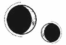

CAPÍTULO 1
Cuando llegó la luz, estuvo a punto de partirle el cerebro.
Se escucharon gritos.
—¡Joder! ¿Cómo es posible que esté despierta? —Una voz se abrió paso entre el tormento de los sentidos.
La luz casi la apuñalaba. Era como tener una daga clavada entre los ojos que se enterraba en su cráneo. Por Dios, sus ojos…
Se retorció mientras veía la luminosidad borrosa, descentrada. Sintió la quemazón de un líquido que le bajaba por la garganta y un rugido en los oídos.
Unos dedos hábiles se le clavaron en los brazos, contra el hueso, y la arrastraron. El aire le entró de golpe en los pulmones y empezó a toser cuando el fluido volvió a subir.
—Maldita sea con el líquido de suspensión. No hay forma de agarrarla. ¡Haz que se calle! Está a punto de ahogarse.
Cuando la soltaron, notó un golpe en la cabeza, también una piedra áspera bajo las manos. Arañó a ciegas la oscuridad para intentar incorporarse. Tenía los ojos cerrados, pero la luz seguía apuñalándole el cerebro como si fuera un cuchillo. Entonces le arrancaron un objeto duro de la nuca y sintió que algo caliente y húmedo le recorría la piel.
—¿Cómo es posible que esté despierta, joder? Está claro que alguien cometió un error con la dosis. No dejes que se vaya.
La volvieron a sujetar por los brazos y la levantaron del suelo.
Ella se zafó y se obligó a abrir los ojos, y, aunque solo veía un blanco cegador, se lanzó hacia esa dirección.
—¡Maldita zorra, me has cortado!
Sintió un dolor intenso en la parte de atrás de la cabeza.
Todavía había luz cuando recobró la consciencia.
Fue poco a poco, como si estuviera bajo el agua nadando hacia una superficie que se extendía más allá de su alcance, hasta que la consciencia fue colándose de nuevo en su cerebro. Tenía los ojos cerrados porque la luz era muy intensa, pero aun así le dolían.
Estaba tumbada sobre algo duro. Una mesa fría, un metal inerte que podía palpar con los dedos.
Distinguía vagamente algunas voces, que sonaban amortiguadas pero próximas.
—¿Y bien? —Era la voz de una mujer—. ¿Alguno más?
—No —respondió un hombre, el que había escuchado antes—. Hemos sacado a los demás, pero esta se encontraba donde no debía.
—¿Y estaba consciente cuando abristeis el tanque?
—Claro que sí, y empezó a gritar en cuanto levantamos la tapa y la sacamos. A mí casi me da un infarto y Willems se asustó tanto que a punto estuvo de ahogarla. Cuando la tuvimos fuera, se puso como loca. Me hizo un montón de arañazos antes de que la dejáramos inconsciente. Tenía la intravenosa puesta, pero estaba sin sedación. Imagino que alguien la habrá desactivado.
—Eso no explica la ausencia de información sobre ella —dijo la mujer—. Qué extraño.
—Seguramente se hizo con prisas. No debe de llevar ahí mucho tiempo. Incluso los que se preservaron bien están casi todos muertos. La mayoría de los tanques no son más que una sopa de huesos —añadió el hombre, soltando una risilla nerviosa.
—Sabremos más cuando la llevemos a la Central —aseguró la mujer, a quien parecía que no le interesaba demasiado lo ocurrido—. Has hecho bien en avisarme porque es anómalo. Infórmame de todos los que despierten. Los cadáveres que estén intactos serán reanimados para trasladarlos a las minas y los que estén vivos irán al Reducto.
—Por supuesto. También querría saber si usted hablará bien de mí. Me serviría de mucho viniendo de su parte. —El tono del hombre era esperanzador y su risa, forzada—. Ya no soy tan joven, como bien sabe.
—El Sumo Nigromante tiene muchas peticiones que atender, pero tu trabajo no caerá en el olvido. Prepara un camión para el transporte.
Se oyeron unos pasos que se alejaban seguidos de un suspiro irritado.
—No tienes por qué fingir que estás inconsciente. Sé que has despertado, así que abre los ojos —le ordenó la mujer a Helena—. He alterado tus sentidos para que la luz no te moleste demasiado.
Helena parpadeó con cautela.
El mundo que la rodeaba estaba bañado por un crepúsculo verdoso y todo parecía una sombra. Logró atisbar la silueta de una persona moviéndose a la derecha.
Ella la siguió con la mirada lentamente.
—Bien, parece que entiendes las órdenes y captas los movimientos.
Helena intentó hablar, pero solo logró emitir un jadeo áspero. Oyó el chasquido de un bolígrafo y el roce de unas páginas al pasar.
—A ver… ¿Eres la prisionera 1273 o la prisionera 19819? Hay dos números de identificación y ninguno de ellos está registrado en esta prisión. ¿Tienes nombre, por casualidad?
Helena no dijo nada. Ahora que la sola idea de enfrentarse a la luz no le daba pavor, pensaba con más claridad. Seguía siendo una prisionera.
La mujer soltó un bufido de impaciencia.
—¿Me entiendes?
Helena no respondió.
—Bueno, supongo que era de esperar, aunque pronto lo sabremos. Tú, tráela.
La sombra se disipó frente a Helena y aparecieron otras personas. Unas manos frías le tocaron las muñecas, mientras el hedor a conservantes químicos y a carne podrida inundaba su nariz. Eran necrómatas. Helena trató de distinguir sus rostros, pero la mirada se le perdía y era incapaz de enfocar la vista.
La mesa empezó a vibrar cuando la empujaron sobre el suelo pedregoso, con un traqueteo que le retumbaba hasta en el cerebro y los dientes. Después hubo tanta luz que parecía que le hubieran clavado agujas en las retinas, y soltó un grito ahogado, cerrando de nuevo los ojos con fuerza.
Sintió una sacudida hacia delante que la mareó, y todo volvió a sumirse en la oscuridad. Un motor empezó a emitir un zumbido al encenderse por debajo de ella.
Tenía que escapar. Trató de moverse, pero sintió un chasquido metálico.
—Quédate quieta. —De pronto, volvió a oír a aquella mujer. Le pareció que estaba demasiado cerca.
Helena se resistió, respirando entre jadeos descontrolados, y retorció las manos y los pies contra las ataduras. Tenía que huir, tenía que…
—No me compliques el día —dijo la mujer con un tono glacial.
Entonces unos dedos agarraron la nuca de Helena, y sintió una descarga de energía extendiéndose por su cerebro.
Volvió la oscuridad.
Una sacudida agónica y un terror repentino lograron que Helena recobrara la consciencia esta vez.
Se incorporó con los ojos muy abiertos, justo a tiempo para ver cómo retiraban una jeringuilla de su brazo. Escuchó el tintineo de unas cadenas al hacerlo y volvió a tumbarse con el corazón en un puño. Cada vez que le latía, sentía una punzada de dolor, como si la hubieran apuñalado.
—Ya está —oyó el repiqueteo que produjo la jeringuilla al caer en una bandeja metálica que había a su derecha—. Con eso estarás lúcida y podrás hablar.
Era la mujer de antes.
Helena ya no estaba en la camilla ni en un camión. Debajo de su cuerpo había un colchón duro y el aire olía intensamente a antiséptico, como si todo hubiese sido recién desinfectado. Arriba, se veía un techo gris apagado.
A pesar del dolor que sentía, notaba que la energía le fluía con fuerza por las venas hasta convertirse en un calor abrasador que se expandía por sus manos cuando las flexionaba. Se percató de que iba recuperando la consciencia y de que todo se estaba volviendo más brillante, más claro. Se retorció sobre sí misma, y algo metálico se le clavó en la muñeca.
—De eso nada. Te romperías los huesos antes de partir uno de esos grilletes. Responde a mis preguntas y tal vez te permita levantarte antes de que se te pase el efecto de la medicación. Sin ella te dolería demasiado.
Como no podía moverse, Helena sintió que su mente comenzaba a activarse. Le habían puesto una inyección, seguramente con algún tipo de estimulante potente. Atrapada en su interior, la energía se concentró en su cerebro, y los pensamientos dispersos y aterrorizados empezaron a ordenarse con una claridad cristalina.
—Helena Marino. Deberías… —escuchó cómo pasaba las páginas— estar muerta, según el expediente 1273. Se te condenó a muerte, debido a «heridas graves» que no se especifican. Pero el expediente 19819 dice que fuiste condenada al tanque de suspensión. —Pasó más páginas—. Sin embargo, no hay registros de que llegaras allí o de que pasaras por algún procedimiento. —La mujer se mordió el labio inferior—. No apareces en ninguna parte en nuestros archivos desde augustus del año pasado. Es decir, desde hace catorce meses. Y ahora te encontramos en el almacén de suspensión al que nunca llegaste. ¿Cómo es eso posible?
Helena parpadeó lentamente mientras asimilaba la información. ¿Catorce meses?
—Evidentemente, nadie sobrevive tanto tiempo en ese estado. Es casi imposible aguantar seis meses en perfectas condiciones, y a ti ni siquiera te almacenaron correctamente. Así que ¿de dónde vienes? ¿Y quién te llevó allí?
Helena apartó la mirada. Se negaba a responder.
La mujer murmuró mientras se acercaba.
—No te vas a meter en ningún lío si hablas. Dime la verdad y pondremos fin a todo esto. ¿Dónde estuviste antes de que te llevaran a suspensión?
Formuló la pregunta lentamente.
Helena no respondió, aunque le ardían los músculos de su rostro de las ganas que tenía de moverlos. Empezó a temblarle el cuerpo cuando los latidos del corazón impulsaron el medicamento por sus venas.
Ya no quedaba nadie a quien proteger, pero se negaba a cooperar con sus carceleros. No quería ayudarlos en nada, ni siquiera con sus registros.
Además, en realidad ella no había estado en ningún otro sitio.
—¿Dónde. Estuviste. Antes. De. Que. Te. Llevaran. A. Suspensión? —La mujer casi estaba gritando.
Helena sintió que se le cerraba la garganta. No quería ni pensar en la respuesta, porque la destrozaban los recuerdos que le venían al hacerlo.
Antes de acabar en el almacén, la habían capturado junto con todos los demás y los habían metido en jaulas a la entrada de la Torre de Alquimia, adonde llevaron a todos los prisioneros para que fueran testigos de las «celebraciones» del fin de la guerra.
Todavía recordaba el olor a humo y a sangre en el calor del verano, todavía escuchaba los roncos vítores de sus enemigos al ver cómo morían los líderes de la Resistencia, cuyos gritos se iban desvaneciendo poco a poco. Aunque los veían morir, sabían que aquello aún no se había acabado, ni siquiera después de muertos.
Porque entonces emergía de entre la multitud algún nigromante, deseoso de alardear de sus poderes, y, en cuestión de segundos, ese cadáver volvía a levantarse. Esa persona, en la que Helena había confiado o a la que había servido, regresaba a la vida gracias a la reanimación, convertido en un necrómata, un cuerpo autómata completamente vacío. Los abrían en canal, los despellejaban, les extirpaban los órganos, los dejaban sin ojos y sin boca, y los usaban para matar al siguiente «traidor» de una forma todavía más salvaje.
Las ejecuciones no pararon hasta que el aire estuvo completamente rojo del vapor de la sangre.
Incluso usaron el cadáver del general Titus Bayard para asesinar a su mujer. Poco a poco, le hicieron comerse las partes del cuerpo que le iba cortando.
Cada muerte se llevó un trozo del alma de Helena hasta que en su pecho solo quedó un vacío doloroso. Y, cuando ya no hubo nadie a quien mereciera la pena matar públicamente, la metieron en un tanque de suspensión.
El resto de los prisioneros estaban inconscientes cuando los paralizaron, cuando les clavaron agujas en las venas, cuando les metieron tubos por la nariz, cuando les pusieron mascarillas en la cara… En cambio, Helena no.
La habían mantenido despierta, plenamente consciente de todo lo que le estaba pasando, mientras la encerraban en su propio cuerpo y la abandonaban en la oscuridad, a la espera de que alguien viniera a por ella.
Pero no vino nadie.
Al sentir el chasquido de unos dedos delante de ella, Helena despertó de sus recuerdos. La mujer que tenía delante la estaba fulminando con la mirada.
—No arriesgaré mi reputación por un error de registro. Si no me respondes, dejaré de hacer esto por las buenas.
Helena torció el gesto.
—¿Ves? Sí que me entiendes.
A Helena se le encogió el estómago, pero mantuvo la boca cerrada.
La mujer se acercó un poco más a ella. Helena aguzó la vista para verla mejor: un rostro cuadrado con unos labios fruncidos que denotaban impaciencia, una bata médica.
—Tal vez es el momento de darte un ejemplo de cómo será si no colaboras. —La mano de la mujer presionó el cuello de Helena, y esta soltó un chillido ahogado cuando notó que una energía candente pero heladora la traspasaba hasta la columna.
No era una descarga eléctrica como las que había experimentado en el tanque, sino que salía de la mano de la mujer y se clavaba en Helena como una aguja. El chorro de energía la hizo vibrar como un diapasón hasta que ambas resonaron en la misma frecuencia.
La mujer cerró entonces los dedos. Helena sintió un dolor que le atravesaba todos los nervios del cuerpo. Se le escapó un grito ahogado e incoherente, y notó que su cuerpo convulsionaba con las manos aferradas a los grilletes.
—Quédate quieta.
Con un chasquido, Helena se paralizó. No sentía nada desde el pecho hacia abajo, como si le hubieran dañado la columna, y el pánico le hacía arder la sangre.
Luego, con un simple movimiento de la mano de la mujer, el entumecimiento desapareció. Unos dedos ásperos por el excesivo uso de jabón recorrieron el brazo de Helena.
—¿Lo entiendes ahora?
La resonancia de la mujer seguía atravesándola como una corriente, como si fuera una advertencia imposible de ignorar. Helena consiguió asentir entre temblores. Debería haberse dado cuenta: la mujer era una vivemante. Es decir, lo contrario a un nigromante: los vivemantes controlaban a los vivos en vez de a los muertos.
—Sabía que lo pillarías al vuelo. Probemos de nuevo.
A Helena se le cerró aún más la garganta y también le ardían los ojos. Sentía punzadas en todos los nervios de su cuerpo y la sangre golpeándole en los oídos. ¿Qué tenía de malo responder?, se preguntó a sí misma.
—¿De dónde viniste?
—Esss-te-e-ssst… —Helena intentó que su lengua cooperara.
—Déjate de chorradas extranjeras. Habla en paladio —le instó la mujer.
No existía ningún idioma llamado paladio; en realidad, la mujer estaba hablando en el dialecto del Norte. Helena quiso explicárselo, pero supo que no serviría de nada. Tragó saliva y lo intentó de nuevo, pero su lengua arrastraba todas las palabras al pronunciarlas.
La mujer suspiró.
—¿Por qué los integrantes de la Resistencia siempre me hacéis perder el tiempo? Tal vez si te damos una descarga en el cerebro, te acuerdes de hablar como es debido.
Esta vez agarró la cabeza de Helena al hacerlo, y ella sintió que una onda de resonancia la atravesaba de lado a lado como si chocaran dos platillos.
Todo se tornó rojo y la garganta de Helena emitió un grito atroz.
La mujer retiró las manos.
—¿Pero qué sucede?
Helena no estaba segura de si la mujer estaba moviéndose en círculos o si era la habitación la que daba vueltas.
—¿Qué es esto? ¿Quién te lo ha hecho?
Helena contempló el techo mareada hasta que el color rojo desapareció de su vista. Sentía cómo le temblaban las manos, que se retorcían convulsivamente contra los grilletes. No sabía de qué estaba hablando aquella mujer.
—Te han hecho algo en la mente —explicó esta, sorprendida pero extrañamente fascinada al mismo tiempo—. Algún tipo de transmutación, nunca había visto nada igual. Voy a tener que informar de esto. Necesito un experto. Tienes… —La mujer se quedó callada—. ¡No existe un nombre para esto! Tendré que inventarlo yo…
Parecía que estaba hablando consigo misma.
—Barreras de transmutación en un cerebro. ¿Cómo es posible? Nunca he visto… Siguen… siguen un patrón.
Volvió a tocar a Helena, y ella torció el gesto, pero en esta ocasión la resonancia no le pareció una tortura; solo sintió un escalofrío que lo envolvió todo en un rojo chillón.
—Esta obra es compleja, precisa, muy profesional. Un vivemante ha reconectado manualmente la consciencia humana.
Helena permaneció quieta, sin entender nada.
La mujer se acercó tanto que Helena pudo distinguir sus ojos azules, con unas arrugas marcadas en el entrecejo y alrededor de la boca. Miró a Helena con gran fascinación.
—Si Bennet siguiera vivo, se maravillaría al ver lo preciso que es este trabajo. —La resonancia recorrió la mente de Helena de una forma tan tangible que parecía como si unos dedos estuvieran deslizándose por su cerebro. Los ojos claros de la mujer se desenfocaron mientras trabajaba—. Si hubiera cometido el más mínimo error, habrías quedado en estado vegetal, pero quien hizo esto te mantuvo casi intacta. Qué perfección.
—¿Quééé? —Helena por fin consiguió pronunciar una palabra completa.
—Me pregunto… ¿Cómo será? —La mujer se alejó y regresó un minuto después con una lámina de cristal.
Helena entrecerró los ojos y reconoció el objeto: una pantalla de resonancia. Se solía usar en presentaciones académicas y en operaciones médicas de alquimia. El gas estaba formado por partículas reactivas que reflejaban la forma y el patrón de un canal de resonancia.
La mujer sostuvo el cristal por encima de su cabeza y posó la otra mano en su frente para hacerle una resonancia cerebral. La visión de Helena se tornó roja de nuevo, pero aguzó la vista y observó cómo la tenue nube entre los paneles se transformaba en la forma difusa de un cerebro humano y, acto seguido, en una incomprensible telaraña de líneas que lo cruzaban por todas partes.
—Dudo que entiendas esto, pero imagínate que tu mente es una… una ciudad. Tus pensamientos recorren distintas calles para llegar a su destino. Esas líneas que ves son las calles que se han desviado. Hay barreras creadas por la transmutación, así que, en lugar de seguir el curso natural del cerebro, alguien ha generado rutas alternativas. Existen zonas que están fuera de alcance. No imagino cómo… Estas habilidades serían…
La mujer dejaba las frases a medias, y puso la pantalla a un lado mientras miraba detenidamente a Helena.
—¿Quién te hizo esto? —preguntó en voz alta, con lentitud y vocalizando exageradamente.
Helena solo negó con la cabeza.
El gesto de la mujer se endureció peligrosamente, pero entonces pareció reconsiderarlo.
—Supongo que es imposible que lo sepas dado el estado de tu cerebro. Seguramente tengas suerte si recuerdas cómo te llamas. Fuiste alumna de alquimia, supongo. —Tamborileó distraída el grillete de metal que Helena tenía alrededor de la muñeca.
Helena asintió con cautela.
—Y eres extranjera, evidentemente. —Miró a Helena de arriba abajo.
Esta tragó saliva.
—Etras.
—Ah, entonces estás muy lejos de casa. ¿Recuerdas tu repertorio de resonancia?
—Div… erso.
—Hum. —La mujer frunció el entrecejo y analizó a Helena con más atención—. Espera. Creo que me hablaron de ti. Eres esa chica que recibió la beca de los Holdfast, ¿verdad? Eso debió de ser hace más de una década, así que ahora tienes… ¿Cuántos? ¿Veintitantos años?
A Helena le ardían los ojos, pero asintió brevemente.
La mujer arqueó una ceja.
—¿Recuerdas qué le pasó a tu mecenas, al principado Apollo?
—Fue… asesinado.
—Hum. Y la guerra, seguro que te acuerdas de eso. ¿Ayudaste al joven Holdfast a quemar la ciudad? A vuestro querido Luc, como os gustaba llamarlo.
A Helena se le contrajo la garganta.
—Yo no… luché.
La mujer soltó un breve sonido de sorpresa y entrecerró los ojos.
—¿Y en la batalla final? Supongo que recuerdas eso, ¿no?
Helena abrió la boca varias veces, pero la lengua se le enredaba y le impedía hablar.
—Nosotros… La… la Resistencia perdió. Hubo… ejecuciones. M-Morrough vino… al final. Tenía… tenía a Luc. L-lo mató… allí. Luego… luego me… me llevaron al almacén.
—¿Quiénes?
Helena tragó con dificultad.
—L-liches.
La mujer rio por lo bajo.
—Hace mucho tiempo que no escucho a nadie atreverse a usar este insulto. Todos los inmarcesibles, independientemente de su forma, son los seguidores más allegados del Sumo Nigromante. Se les concede la inmortalidad por su excelencia. En este nuevo mundo, la muerte solo se lleva a los indignos. Da igual que los insultes, porque tus amigos no son más que cenizas olvidadas.
Palpó entonces la frente de Helena.
—Aunque tú pareces casi intacta. Así que ¿por qué se emplearon tan a fondo contigo? ¿Y quién podría haber…? —La mujer cogió la pantalla de resonancia, la observó de nuevo y luego desapareció entre las cortinas.
Helena sintió alivio al quedarse sola.
¿Habían alterado su memoria o su mente?
Si no hubiera visto la pantalla de resonancia, habría pensado que la estaba engañando. Sabía cómo era un cerebro. Quien lo hizo debió de emplear una vivemancia muy especializada y probablemente poseía extensos conocimientos para transmutar la mente de esa forma.
No era algo que alguien olvidaría con facilidad.
Aun así, Helena no sentía que hubiera olvidado nada, salvo la mención de una herida grave.
En realidad, no recordaba haber sufrido ningún daño, solo conmoción, dolor y terror.
Tragó saliva y parpadeó con fuerza para intentar no pensar en ello.
Miró a su alrededor, tratando de descubrir qué había en la habitación. El medicamento que le habían administrado era increíblemente efectivo. Justo donde la aguja se había clavado en el corazón, se le estaba formando un moratón y le dolía con cada latido.
Miró hacia abajo. La cama tenía barras a ambos lados, y los grilletes que sujetaban sus muñecas estaban encadenados a ellas. Bajo los grilletes, la piel se mostraba en carne viva, amoratada, y alrededor de cada muñeca había sendas bandas metálicas de color verdoso.
Esas sí que le resultaron familiares: las había llevado durante la celebración.
En la oscuridad, bañada en sangre, bajo la tenue luz de las antorchas y rodeada de tantos cadáveres en la jaula, no las había visto bien, pero las recordaba perfectamente.
Dentro del tanque de suspensión, siempre fue consciente de que las tenía. La existencia de esas bandas metálicas había permanecido al borde de su consciencia, una presencia ineludible que reprimía su resonancia y le impedía usar la transmutación para escapar.
Hasta en el tanque era capaz de sentir el lumitio que había en ellas.
La naturaleza del lumitio unía los cuatro elementos de aire, agua, tierra y fuego, y, mediante esa unión, se creaba la resonancia.
La Fe Sagrada consideraba que la resonancia era un regalo de Sol, la deidad de la Quintaesencia elemental, para elevar a la humanidad. La resonancia era una habilidad escasa en muchas partes del mundo, pero no en la nación elegida por Sol, Paladia. Según los censos anteriores a la guerra, se estimaba que casi un quinto de la población poseía un nivel de resonancia cuantificable. Y, además, se estimaba que ese número aumentaría en la siguiente generación.
Normalmente, la resonancia se canalizaba a través de la alquimia de metales y compuestos inorgánicos, y eso permitía la transmutación o alquimización. Sin embargo, en un alma defectuosa que se rebelaba contra las leyes naturales de Sol, la resonancia terminaba corrompiéndose, dando lugar a la vivemancia (la técnica que esa mujer había empleado contra Helena) y la nigromancia, utilizada para crear necrómatas.
Como canalizador de la resonancia, el lumitio podía aumentar o incluso crear resonancia en objetos inertes mediante la exposición, que los hacía maleables a la alquimia. Sin embargo, el lumitio puro era demasiado sagrado para los mortales; la sobreexposición provocaba enfermedades debilitantes y, en los individuos con resonancia, una exposición directa podía causarles un dolor lacerante y metálico en los nervios.
El lumitio de las esposas no parecía haber enfermado a Helena, lo que indicaba que algo lo había alterado. La energía punzante de su interior estaba sintonizada con su resonancia, y, en lugar de destruirla, le anulaba los sentidos. Helena sentía su propia resonancia, pero, cuando intentaba controlarla, las esposas le generaban una especie de energía estática en los nervios. Por mucho que lo intentara, no era capaz de deshacerse de ella.
Lo único que sabía era que, mientras llevara puestas esas esposas, no era una alquimista.